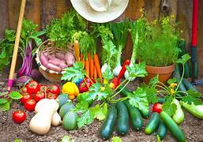

I love swimming! I live about 10 minutes away from a river. I love to go to the river, lake, White Water, pools, you name it. My family loves to swim so we have a people pool and a doggy pool in our backyard.
Last year I started gardening. It's been a lot of trial and error. Over all, last year was a success! This year my garden has more than doubled.